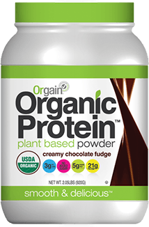
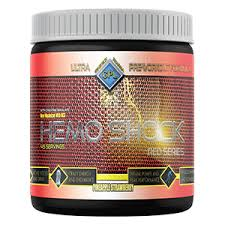
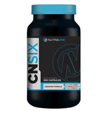

| Name/Purpose |
Pros |
Cons |
| Orgain Organic Protein Powder (Chocolate Flavored) |
I enjoy this protein powder because it tastes really great in smothies but I would not recoomend it in just water. This protein powder gets its protein source from mainly plant-based sources, so this is perfect for me since I am lactose intollerant. |
Since this is a plant based protein, it is a little bit grainy, but not nearly as grainy as the protein powders from other companies like vega. Yet, if you are not lactose intollerant, I would reccomend using a protein powder that gets its protein from sources like whey or milk protein. This is because that protein will be more easily absorbed by your muscles and it is often the cheapest source of protein |
| Hemo (Pre workout) |
The pros for this one is that (at least for me) I only need to take about a half a scoop of this pre-workout to get me going. Therefore it lasts me over two months. Also, the taste is alright, and I take this preworkout, my creatine, and nitric oxide all at the same time (around 15-20 minutes before working out). This has a medium amount of caffeine in it so it doesn't freak ;you out, but it is enough to get you focused. |
The cons are probably the fact that it has caffeine in it, so it is important to rotate this pre-workout with other non-stimulant pre-workouts. |
| Pump and Grow |
This is probably the best nitric oxide I have ever taken, but if you do not care that much about the pump, then nitric oxide is just a waste of money for you. That's not a bad thing, it is just that to feel the effects requires dedication to really straining individual muscles for long periods of time (aka not for a 30-60 minute workout). |
There are no cons, but just do not purchase until you want to try really taking some time to achieve that pump. |
| CNSIX |
This is my creatine that I really enjoy! It is only about 3g, but I think it is helping me gain lean muscle. This product is not really for those who really want to bulk, but for those who are looking to make some lean gains. |
There are not really any cons again other than you have to be patient in order to see the results, and you have to be consistent in using the product (every day). |
 My Big Sky Strong
My Big Sky Strong